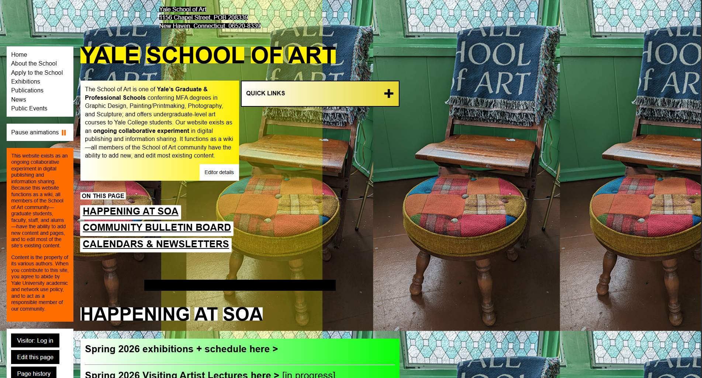
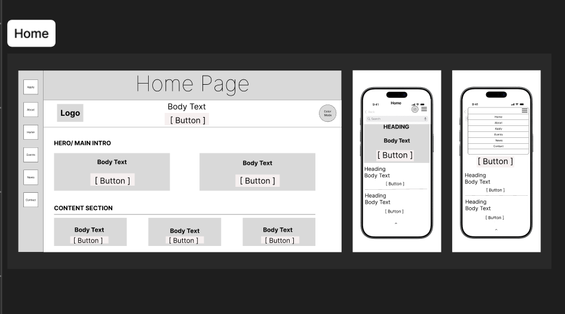
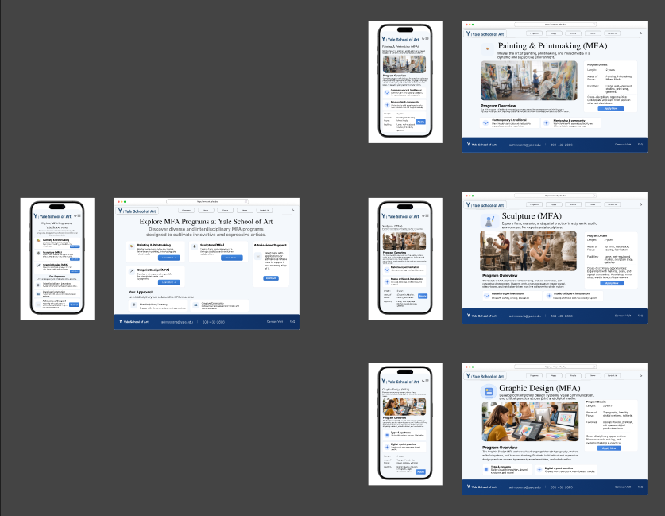

What Was Wrong
The Yale School of Art website (art.yale.edu) is one of the most visually disorienting institutional sites on the web. It operates as an open wiki, meaning any member of the school community can edit it. The result is a site with no consistent visual hierarchy, competing color schemes, and content that is genuinely difficult to navigate for anyone who is not already familiar with the institution.
For a prospective student trying to understand MFA programs, find admissions information, or learn about upcoming events, the experience is frustrating. The problem is not just aesthetic — it is a usability failure. The original site gives equal visual weight to almost everything, making it hard to know where to look or what matters.

- No visual hierarchy Yellow headline text, orange sidebars, and green background photos compete for attention simultaneously. Nothing reads as more important than anything else.
- Navigation is unclear The left sidebar navigation is small and low contrast. There is no clear path for a new visitor trying to find program or admissions info.
- Wiki artifacts visible to the public "Edit this page," "Page history," and "Visitor: Log in" buttons are visible to all users, which undermines the site's credibility as an institutional presence.
- No mobile consideration The layout does not adapt to smaller screens. On mobile, the site becomes nearly unusable with text overflowing and touch targets too small to use reliably.
- Program information is buried The MFA programs — the primary reason most visitors come to the site — have no clear entry point or visual prominence on the homepage.
How We Got There
The redesign moved through three stages: hand-drawn sketches to establish structure, low-fidelity digital wireframes to refine layout and navigation, and high-fidelity Figma prototypes to finalize the visual design before building in code.
Stage 1 — Sketches
We started with paper sketches to explore structure without getting distracted by color or styling decisions. These covered the homepage, events page, search page, form/apply page, and dark mode concepts for both mobile and desktop. The key questions at this stage were: what does the navigation look like, how do we handle mobile, and what sections does the homepage actually need?

Stage 2 — Low-Fidelity Wireframes
After settling on a general structure, we moved to digital low-fidelity wireframes. These established the actual layout grid, content sections, and navigation behavior across breakpoints without any color or real content. This stage was where we locked in the core structure: a top navigation bar for desktop, a hamburger menu for mobile, a hero section, and a clear content section below.

Stage 3 — High-Fidelity Prototype
The high-fidelity prototype in Figma applied the visual design to the wireframe structure. We introduced a clean white and neutral palette, consistent card-based layouts for program pages, and clear typographic hierarchy. Each MFA program page — Painting and Printmaking, Sculpture, and Graphic Design — followed the same layout pattern so users always knew where to find the same type of information.

Key Choices and Why
Every major design decision was made in response to something specific that was broken in the original. These are the ones that had the biggest impact on usability.
Clean Color Palette
The original site's competing colors made everything feel equally urgent. We stripped it back to a white base with minimal accent color so that visual weight could actually signal importance.
Hamburger Menu on Mobile
The original sidebar navigation collapsed poorly on small screens. A standard hamburger menu with a full-screen overlay gives mobile users clear, tappable navigation without clutter.
Consistent Program Page Template
Each MFA program now follows the same layout: hero image, program overview, key details, and a call to action. Users learn the pattern once and can apply it across all programs.
Removing Wiki UI from Public View
Edit buttons, page history, and login prompts were removed entirely from the public-facing design. These belong in an admin interface, not the front page of an MFA school.
Card-Based Content Sections
Instead of flat text blocks, content is grouped into cards with consistent spacing. This creates visual structure and makes it easier to scan the page quickly.
Mobile-First Breakpoints
We designed the mobile layout first, then expanded to desktop. This forced us to prioritize the most important content instead of squeezing a desktop layout down.
What We Tested, What Changed
We ran feedback sessions at two stages: during the wireframe phase and after the high-fidelity prototype was complete. Feedback came from peer critiques in class and cross-device testing across desktop, tablet, and mobile screen sizes.
| Issue Found | Feedback Source | What Changed |
|---|---|---|
| Program links were not obvious enough on the homepage | Peer critique, wireframe stage | Added a dedicated MFA programs section with labeled cards and direct links to each program page |
| Mobile nav overlay did not have a clear close button | Device testing on mobile | Added an X button at the top right of the mobile nav overlay with enough tap area to use reliably |
| Program detail pages had too much text with no visual breaks | Peer critique, prototype stage | Split program info into labeled sections with spacing and added a sidebar card for key program details |
| Footer lacked contact and location info | Peer feedback | Added school address, email, and phone number to the footer to match what users expect from an institutional site |
The Result
The finished site is a fully responsive redesign of the Yale School of Art website built in HTML, CSS, and JavaScript. It covers the homepage, individual MFA program pages for Painting and Printmaking, Sculpture, and Graphic Design, and includes consistent navigation, a mobile hamburger menu, and a footer with contact information.
Compared to the original, the redesign gives prospective students a clear path to find programs, understand requirements, and take action. The layout is consistent across pages and works across desktop and mobile without layout issues.